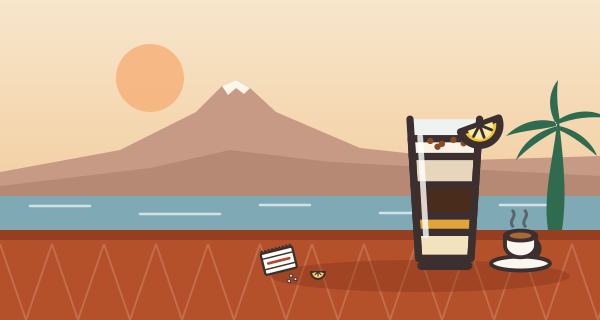

A1Spāņu valoda
En la cafetería Kafejnīcā spāņu valodā
Vārds Datums Cik labi man padevās?
1
Kafejnīcas vārdi
el / los — vīr. dz.la / las — siev. dz.
- el café solomelnā kafija — mazs espreso
- el cortadoespreso ar nedaudz piena
- el café con lechekafija ar pienu (uz pusēm)
- el café americanoespreso, atšķaidīts ar karstu ūdeni
- el café bombónespreso ar iebiezināto pienu
- el barraquitoTenerifes slāņu kafija
- el carajilloespreso ar brendiju vai rumu
- el descafeinadokafija bez kofeīna
- el café con hielokafija + glāze ar ledu
- la lechepiens
- el azúcarcukurs (paciņā: el sobre)
- la leche condensadaiebiezinātais piens
- el vaso de aguaūdens glāze
- el cruasánkruasāns
- la tostadagrauzdiņš (bieži ar tomātu un eļļu)
- los churrosčurosi — cepti mīklas stienīši
- el bocadillosviestmaize no bagetes
- el zumo de naranjaapelsīnu sula
- el camareroviesmīlis (la camarera — viesmīle)
- la cuentarēķins